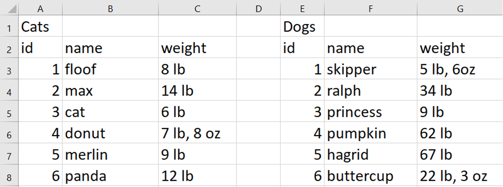
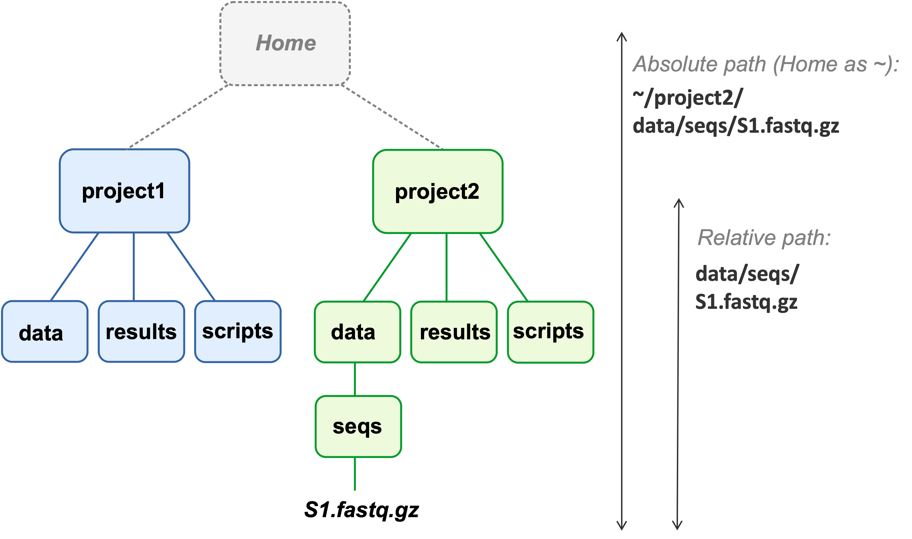
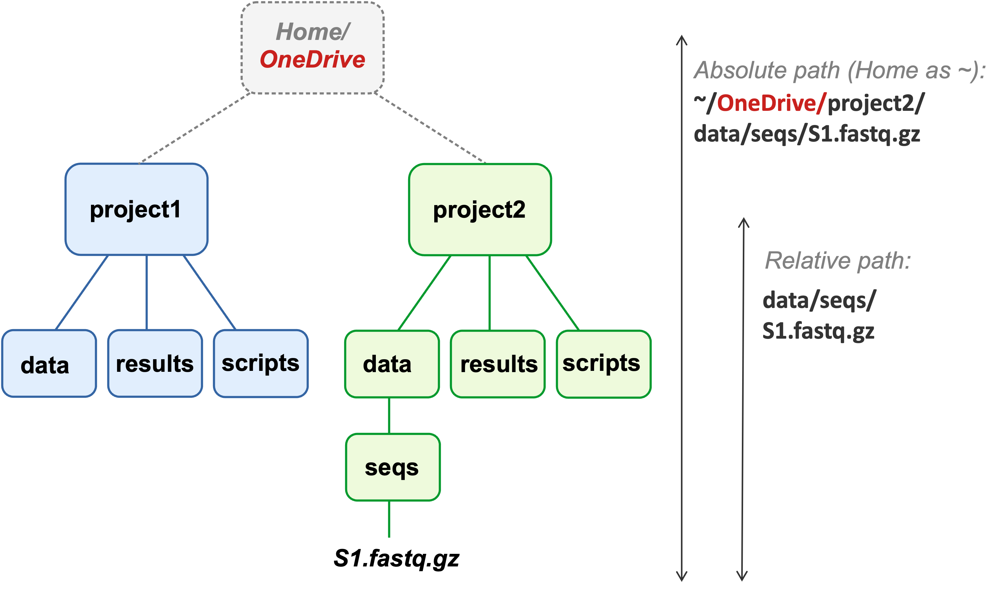

| sample_id | time | treatment |
|---|---|---|
| S82 | 10dpi | cathemerium |
| S75 | 10dpi | cathemerium |
| S78 | 10dpi | control |
| S84 | 10dpi | control |
| S76 | 10dpi | relictum |
Data management
(and relative paths)
Week 11 – Lecture A
Jelmer Poelstra
November 02, 2026

Raw data management
Raw data is precious
Your raw data (e.g. FASTQ files) is the result of your experiment,
and often expensive and labor-intensive to produce.
Never delete it
It remains your ground truth, even after you’ve produced processed files.
It allows you and others to reproduce your results, and to re-analyze the data with new methods.
Keep multiple copies
Ideally in at least two different physical locations.
At OSC, never store it only in a scratch dir, where unused files are automatically deleted.
Share it publicly
After publication.
Required by most journals and funding agencies; has long been expected for sequencing data.
Documenting and protecting raw data
Document it
Keep track of data provenance:
when and from where did you get the data?Keep track of the metadata for each sample.
Use standard, preferably plain-text file formats.
Protect it
Consider making it read-only with file permissions (bonus material).
After downloading or sharing key data, consider using “checksums” to check that files were transferred entirely (bonus material).
OSU data policies
Classification
OSU data is classified as Public (S1), Internal (S2; default), Private (S3), or Restricted (S4).
These levels determine where you may store data and which tools you may use with it (see: IDP Calculator & approved AI tools).
- E.g. plant, insect, and microbial omics data is typically S1–S2, which is fine for regular OSC projects. Identifiable human data is typically S3–S4 and may need OSC’s Protected Data Service.
Retention
Keep research data for at least 5 years after the project ends, and at least until the student involved has graduated.
Research data belongs to OSU, not to you: when you leave, you can generally take a copy, but the original stays at OSU, and further use requires agreement with your PI.
See OSU’s Research Data and Institutional Data policies.
(Meta)data in spreadsheets
What data goes in spreadsheets?
Omics data: mostly not
Primary omics data, like FASTQ files or mass spectrometry raw files, comes in specialized formats and is far too large for a spreadsheet.
Downstream results, like count or abundance tables, may be delivered and/or stored in Excel files, but are best analyzed with code.
- So in omics projects, the main spreadsheet is your sample metadata, which you may enter by hand and your code then reads.
Field and lab data: often
You may also have data from field or wet-lab experiments.
Such data is often entered in spreadsheets as well — the recommendations on the next slides apply to it too.
Spreadsheet recommendations
Entering (meta)data in Excel is fine, as long as code can read the spreadsheet without manual cleanup. Some recommendations based on The Turing Way’s Data Organisation in Spreadsheets:
Structure
- No merged cells, colors, formatting, or comments to store information.
- No calculations (in raw data files).
- Only one value per cell.
- One row per sample, one column per variable, and a single header row.
- Need a place for notes?
Add a column, or use a README. - Export the final version as a CSV or TSV file.
Content
- No spaces or special characters in sample and column names (
time_point, notTime point (days)). - Units in headers, if needed (
time_dpi), not in cells (10 dpi). - Dates as
YYYY-MM-DD(e.g.2026-11-04). - A single code for missing data
(e.g.NA, preferred over empty cells).
Spreadsheet examples
An OK example
The garrigos/meta/metadata.tsv file you’ve seen before:
What problem can you find here?
A problematic example
Sample
|
Infection
|
||
|---|---|---|---|
| Sample ID | Collected | Time point (days) | Treatment |
| S82 | 8/14/2026 | 10 dpi | cathemerium |
| S75 | 2026-08-14 | Cathemerium | |
| S78 | Aug 14 | 10 dpi | control |
| S84 | 8/14/2026 | 10 dpi | ctrl (low RNA yield) |
| S76 | 8/14/2026 | 10 dpi | relictum |
| Yellow = sequenced twice | |||
And what problems can you find here?
Another problematic example

Example from Iowa University Libraries via Kelsey Badger, OSU Libraries.
And what problems can you find here?
Spreadsheet pitfall
Excel turns gene names into dates
Excel converts text that looks like a date: SEPT2 and MARCH1 become
2-Sepand1-Mar.About 20% of papers with gene lists in Excel files contained such errors (Ziemann et al. 2016), and several human genes were renamed because of it (SEPT2 is now SEPTIN2).
This also happens when you simply open a CSV/TSV file in Excel and then save it.
To prevent this, set such columns to the “Text” format before entering or pasting data. Recent Excel versions also have a setting to turn off automatic data conversion.
Sharing data
Sharing is required
Public access
By the end of 2025, all federally-funded research must make articles and data publicly available immediately upon journal publication with no waiting periods allowed.
— Federal Research Policy Guide from OSU’s ERIK
This requirement is now in effect.
Data Management Plans
DMPs specify how you’ll manage and share your data, and major funders require them (NSF since 2011, NIH since 2023):
A DMP is currently required for all competitive grant programs of the United States Department of Agriculture and the National Science Foundation.
— Grünwald et al. (2024)
Platforms for sharing data
NCBI
General repositories
Code
GitHub (or GitLab, Bitbucket), ideally with a DOI via Zenodo.
Some journals also require code in a general repository, where it may get a manual quality check.
A DOI for your GitHub repo with Zenodo
Why?
A GitHub repo can be changed or deleted at any time: a poor permanent reference in a paper.
Zenodo, a general repository run by CERN, can archive a snapshot of your repo and give it a citable DOI.
How?
Connect Zenodo to your GitHub account, and switch on archiving for a (public) repo.
Zenodo then archives each GitHub “release” of the repo with its own DOI, plus a “concept DOI” that always points to the latest version.
Step-by-step instructions are in this week’s self-study exercise and in GA5.
Syncing OSC and local files
Should I keep my OSC and local dirs synced?
Syncing strategy
Fully automatic syncing like with OneDrive or Dropbox isn’t available at OSC — and with large OSC data, you may not want it. Instead:
- Sync version-controlled files via Git/GitHub.
- Periodically sync other files with the transfer methods discussed on the lecture page and this bonus page.
Or: work in one place
Running analyses both at OSC and locally makes syncing a hassle.
So for projects that need OSC,
consider doing all your analyses there.Your local computer (and/or OneDrive/Teams) can then hold an entirely separate set of files, like the manuscript.
Side note:
Why you should prefer relative paths
Absolute vs. relative paths
Absolute paths don’t depend on your working dir — so what could be a disadvantage of using them?
Absolute vs. relative paths

Absolute and relative paths to a FASTQ file in two project dirs.
The relative paths start from the project’s top-level dir (~ is your Home dir).
Absolute vs. relative paths

After moving both projects into OneDrive,
the absolute path has changed, but the relative path has not.
Absolute vs. relative paths
Absolute paths don’t depend on your working dir — so what could be a disadvantage of using them?
Absolute paths:
- Break when you move your entire project dir
- Don’t generally work across computers
Relative paths keep working in these scenarios,
as long as you always run your code from the same working dir within the project
(ideally, its top-level dir).
Relative paths in practice
Would last week’s relative paths still work after moving dirs?
Last week, you referred to input files from week10 with relative paths like ../garrigos/fastq/S63_R1.fastq.gz. Would these still work after moving:
week10into a new dir?- Your entire personal dir?
And would they still work if you ran the same commands from week10/scripts instead of from week10?
References
Grünwald, Niklaus J., Clive H. Bock, Jeff H. Chang, et al. 2024. “Open Access and Reproducibility in Plant Pathology Research: Guidelines and Best Practices.” Phytopathology® 114 (5): 910–16. https://doi.org/10.1094/PHYTO-12-23-0483-IA.
Ziemann, Mark, Yotam Eren, and Assam El-Osta. 2016. “Gene Name Errors Are Widespread in the Scientific Literature.” Genome Biology 17 (1): 177. https://doi.org/10.1186/s13059-016-1044-7.